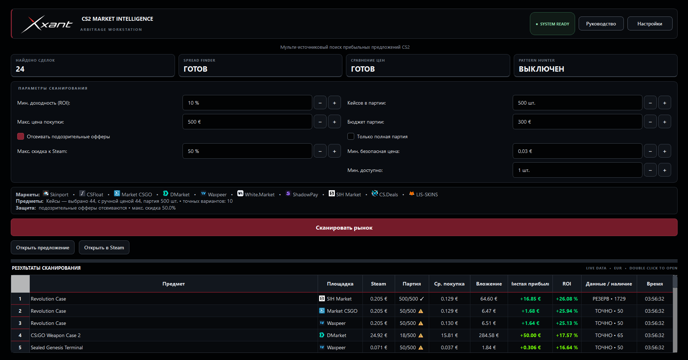

Поиск выгодных офферов
Главный сканер ранжирует потенциальные сделки по чистой прибыли и ROI с учётом комиссии, бюджета и защитных фильтров.
Независимая аналитика для трейдинга CS2
Главный сканер собирает предложения с подключённых маркетов и ранжирует потенциальные сделки после комиссий и расходов. Spread Finder помогает вывести Steam-баланс с минимальными потерями, а сравнение цен показывает лучший маркет для покупки или продажи.

Не таблица цен. Рабочая станция.
Главная задача Xxant — находить потенциально выгодные офферы и показывать расчёт после выбранных комиссий и расходов.
Главный сканер ранжирует потенциальные сделки по чистой прибыли и ROI с учётом комиссии, бюджета и защитных фильтров.
Собирает офферы с подключённых площадок в одной таблице и открывает исходное предложение для ручной проверки.
Учитывает последовательные расходы и точную комиссию Steam, включая минимальные сборы на дешёвых предметах.
Помогает вывести Steam-баланс с минимальными потерями: сравнивает цену покупки в Steam с ценой внешнего маркета и отдельно показывает ожидаемый выход.
Для каждого износа показывает лучший маркет для покупки или продажи, второй результат и разницу между ними.
Режим ликвидности отбирает предметы по выбранному пользователем минимуму продаж за 24 часа, 7 или 30 дней, когда доступна подтверждённая статистика.
Три задачи — три точных инструмента
Главный сканер ищет потенциально выгодные офферы. Дополнительные модули помогают выводить Steam-баланс и сравнивать конкретные предметы.
Xxant собирает предложения с подключённых маркетов, применяет выбранную формулу расходов и показывает вложение, ожидаемую чистую прибыль, ROI, доступность и источник каждого оффера.
Spread Finder ищет предметы, у которых цена внешнего маркета максимально близка к Steam-автобаю, и отдельно сравнивает её с фактической ценой покупки в Steam. Это помогает выбрать более выгодный путь вывода баланса, а не просто найти ликвидный предмет.
Выберите точный предмет и нужные износы. Xxant сравнит подключённые площадки и отдельно покажет минимальную цену для покупки либо максимальную текущую цену для продажи.
Три шага
Выберите площадки и добавьте личные API-ключи там, где они требуются.
Выберите предметы, цену сравнения, размер партии, лимиты и формулу расходов.
Запустите сканирование, изучите расчёт и откройте выбранный оффер на площадке.
Настоящий интерфейс
Нажмите на изображение, чтобы открыть его полностью.
На скриншоте главного окна видна карточка Pattern Hunter. Модуль находится в разработке и тестировании, по умолчанию работает в тестовом режиме и пока не заявляется как готовая функция автоматической покупки.
Подключаемые источники
Доступность зависит от публичного API, личного ключа и условий конкретной площадки.
Официальный канал
Новости, новые версии и инструкции по покупке лицензионного ключа публикуются в официальном канале @XxantScanner. Один ключ активируется на одном устройстве.
Безопасность по умолчанию
Для аналитической работы Xxant необязательно использовать основной Steam-аккаунт. Можно создать отдельные аккаунты на поддерживаемых маркетах и получить бесплатные API-ключи там, где площадка это разрешает.
Таким образом, аккаунт с ценным инвентарём можно вообще не подключать к программе.
Условия получения API-ключей могут отличаться в зависимости от маркета.
Политика конфиденциальности →Тестовая сборка
Скачайте версию для Windows 10/11 x64. Лицензионный ключ можно приобрести через официальный Telegram-канал @XxantScanner. Сборка пока не подписана цифровой подписью, поэтому Windows SmartScreen может показать предупреждение.
FAQ
Основной сканер, Spread Finder и сравнение цен ничего не покупают: они анализируют данные и открывают выбранный оффер для ручного решения. Pattern Hunter находится в разработке и тестировании, по умолчанию использует тестовый режим без buy-запросов и пока не считается готовой функцией автопокупки.
Нет. В Xxant нет поля для пароля Steam. Авторизация происходит только на официальных сайтах, открытых в вашем браузере.
Нет. Для получения рыночных данных можно использовать отдельные аккаунты маркетов без баланса и предметов, если правила площадки позволяют выдать им API-ключ. Наличие CS2 в библиотеке такого аккаунта для работы сканера не требуется.
Нет. Результаты являются расчётной оценкой по данным API и настройкам пользователя. Цены и наличие могут измениться.
Локально на компьютере пользователя, в файле, зашифрованном средствами Windows DPAPI.
Нет. Xxant — независимый аналитический продукт и не является официальным продуктом Valve или перечисленных торговых площадок.